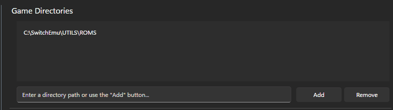

HOW TO INSTALL RYUJINX CANARY
Follow this steps to install and play.
Step 1: Download the emulator
Step 2: Unzip
Open the archive and place it anywhere on your computer
Step 3: Open the application and install Firmware and ProdsKey
ProdsKey 20.5.0
From ryujinx application: Action > Install Key > Install .Keys
Firmware 20.5.0
From ryujinx application: Action > Install Firmware > Install Zip or Folder
Step 4: Enable ryuLDN
From ryujinx application: Option > Setting > Network
Mode ryuLDN
Enable Guest Internet Access/LAN mode
Network Interface: (Select your network Ethernet/Wifi etc)
Press OK to save setting
Step 5: Add ROM Directory
From ryujinx application: Options > Settings > Interface
In the first box add the directory where your ROMs are located
Press OK to save setting

Step 6: Update game to 1.0.1
Right click on the title game Manage title updates
Press ADD and select the update you want to install
Press SAVE to save setting
Step 7: add DLC
Right click on the title game Manage DLC
Press ADD and select the DLC you want to install
Press SAVE to save setting
Now you can start the emulator
NB. ryuLDN emulates a local LAN, you cannot use internet features like Ranked Battle or Mystery Gift
Use private battle > LOCAL for PvP
Use Link Trade to trade Pokemons
HOW TO INSTALL EDEN
Follow this steps to install and play.
Step 1: Download the emulator
Step 2: Unzip
Open the archive and place it anywhere on your computer
Step 3: Open the application and install Firmware and ProdsKey
ProdsKey 20.5.0
From Eden application: Tool > Install Decryption Keys
Firmware 20.5.0
From Eden application: Tool > Install Firmware > Install Zip or Folder
Step 4: check default Network Interface
From eden application: Emulation > Configure > System > Network
Be sure its selected the network interface you are using (Ethernet or Wifi or extra adapter)
Keep disabled Enable Airplane Mode
Press OK to save setting
Step 5: Add ROM Directory
From Eden application: Double click on Add New Game Directory
Select the directory where your ROMs are located
Press OK to save setting
Step 6: Update game to 1.0.1
From Eden menu bar File > Install files to NAND
Select the update and press OK
Step 7: add DLC
From Eden menu bar File > Install files to NAND
Select the dlc and press OK
Now you can start the emulator
NB. Eden emulates a local LAN, you cannot use internet features like Ranked Battle or Mystery Gift
Use private battle > LOCAL for pvp
Use Link Trade to trade Pokemons
TRANSFER SAVE DATA
This section explains how to transfer save files between different emulators (Ryujinx, Eden, etc.) using the game's local save file.
1. Export Save (Starting Emulator)
- In the game list, Right Click on the game title.
- Select "Open Save Data Location" (or similar).
- The save location folder will open. You should see a file named
main.
- Copy this
main file.
2. Import Save (Destination Emulator)
Follow these steps to import the main file into the destination emulator:
- First Run Requirement (Important): If you have never run the game on this emulator, the save folder might be empty. Start a new game, save as soon as possible, and close the emulator. This creates the necessary file structure.
- In the game list, Right Click on the game title.
- Select "Open Save Data Location".
- Paste the
main file you copied. You will be prompted to overwrite the existing file (from the fresh game), Accept the overwrite.
Additional Notes
The emulator should now load the transferred save data when you start the game.
ROM DOWNLOADS & INFORMATION
USEFULL MODS
KALOS MEGASTONE
Download
Seasonal rewards to megaevolve Kalos starters.
CLICK HERE TO KNOW HOW TO INSTALL MODS üöÄ
EDEN
- Right click on game title -> Open mods folder -> Copy and paste the mods in this folder
- Right click on game title -> Configure Game -> Select the mods you want to use
RYUJINX CANARY
- Right click on game title -> Open mods directory -> Copy and paste the mods in this folder
- Right click on game title -> Manage Mods -> Enable the mods you want to use
TROUBLESHOOTING & ERROR FIXES
To troubleshoot effectively, you’ll want to keep an eye on Ryujinx’s logs. If you’re not sure where to find them, go to File > Open Logs Folder in the Ryujinx menu.
Invalid Memory Access Errors
- Memory errors often arise from mod or cheat conflicts. Confirm no mods/cheats are conflicting. Disabled cheats still load into memory, so review all active modifications.
Inconsistent Frame Timing
- Disable VSync in Ryujinx, and externally cap the framerate using GPU driver settings or RivaTuner.
Fatal System Error: System.AccessViolationException
- Causes could include Ryujinx being in a protected folder or blocked by antivirus software. Remove GShade if it’s causing compatibility issues, and uninstall the “OpenCL, OpenGL, and Vulkan Compatibility Pack” if on a Rog Ally.
Game Crash with VRAM Exhaustion Error
Error message: |E| GUI.RenderThread Application : Unhandled exception caught: Ryujinx.Graphics.Vulkan.VulkanException: Unexpected API error "ErrorOutOfDeviceMemory"
- Lower resolution scaling if set high (e.g., 4x), as it’s often unnecessary and VRAM-intensive.
- Enable texture recompression in graphics settings if VRAM usage is high.
Black Screen with Audio on Nvidia GPUs
- Go to Nvidia Control Panel and reset global settings to their defaults.
NSP File Not Displaying on Main Menu or Hanging Emulator
Warning: |W| Loader GetNpdm: NPDM file not found, using default values!
- This error indicates you’re attempting to load an update file rather than the game file. Refer to the Ryujinx setup guide for proper game updates.
Missing or Invalid Keys
Error Message: Missing NCA title key or Unable to decrypt title key
- This error means the emulator is missing crucial encryption keys for the game. Redump your keys or update them to match your firmware version. These keys allow Ryujinx to read and load game files correctly, so having the latest versions is essential.
Error: Could Not Find Vulkan Library (vulkan-1.dll)
- This happens if Ryujinx can’t locate a compatible GPU driver for Vulkan. First, make sure your drivers are fully updated. If the issue remains, your graphics hardware might not support Vulkan, and you may need to switch to the OpenGL graphics API if Vulkan isn’t required for your specific setup.
Ryujinx Crashes Without Any Errors or Closes Immediately
- If Ryujinx closes right after you open it, it’s often because of antivirus software or running it in a protected folder. Make sure the emulator is in a regular, accessible directory and whitelist Ryujinx in any third-party antivirus program.
GLib.GException: Unrecognized image file format
Error Message: GLib.GException: Unrecognized image file format
- This error is also related to Ryujinx being in a protected folder. Move Ryujinx to a regular directory (such as
C:\Users\YourName\Documents\Ryujinx) and avoid storing it in locations like C:\Program Files or the Desktop.
Corrupted Save File Warning
- Corruption may occur if attempting to load saves from newer game versions on older updates. Update the game if needed, and frequently back up save files to avoid loss from unexpected shutdowns.
- You can try to recover and fix your corrupted save on this website